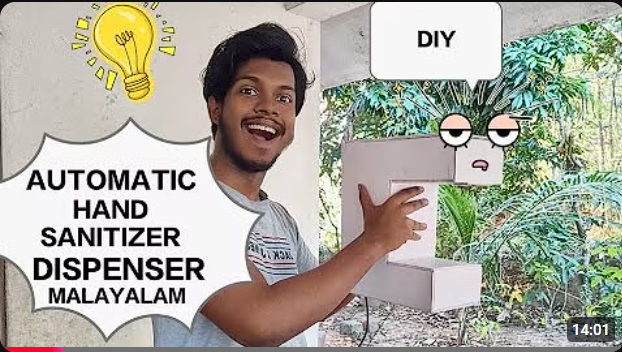

Project Overview_
The Arduino sends a trigger pulse to an ultrasonic sensor and measures the returning echo to estimate distance. When an object is detected closer than 10 cm, the controller switches on the motor for 600 ms, then waits 2 seconds before checking for another dispense.

Hand detected under 10 cm → Motor runs for 600 ms → 2-second pause
How It Works_
- The ultrasonic sensor uses trigger pin 3 and echo pin 2.
- The Arduino calculates distance from the returning echo.
- At less than 10 cm, digital pin 4 switches the motor on.
- The motor runs for 600 ms, followed by a 2-second pause.
- For a computed distance of 10 cm or more, the motor remains off.
Components_
- Arduino board
- Ultrasonic distance sensor
- Motor or pump
- Jumper wires
- Power supply